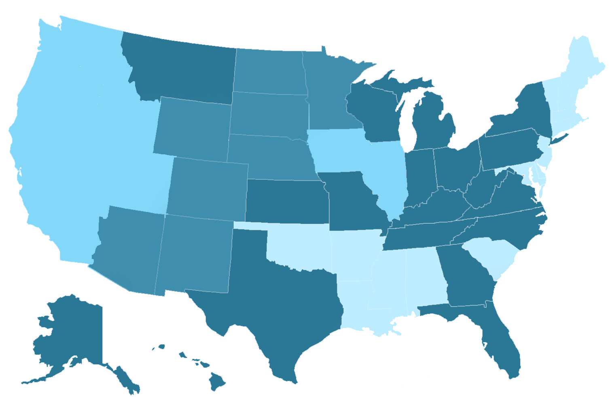
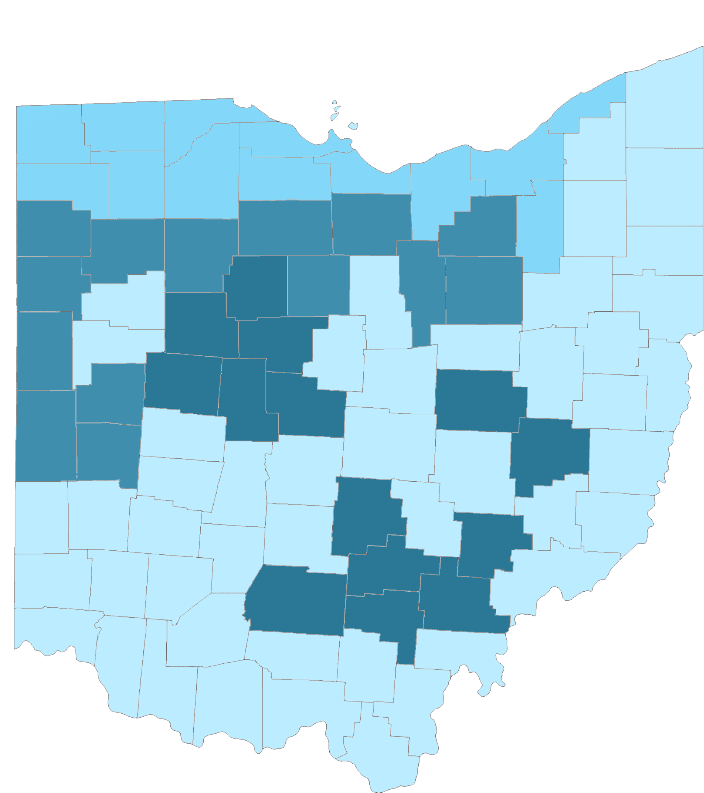

Splash Page
Life Expectancy
Mortality ∨
Heart Diseases
Cancer
Suicide
General
Opioid
Obesity
About Us
Visualization of Columbus Health Trends
U.S. Percentage of
Heart Diseases

Ohio Percentage of
Heart Diseases
> 
Data Analysis by charts
Data Analysis to
Heart Diseases